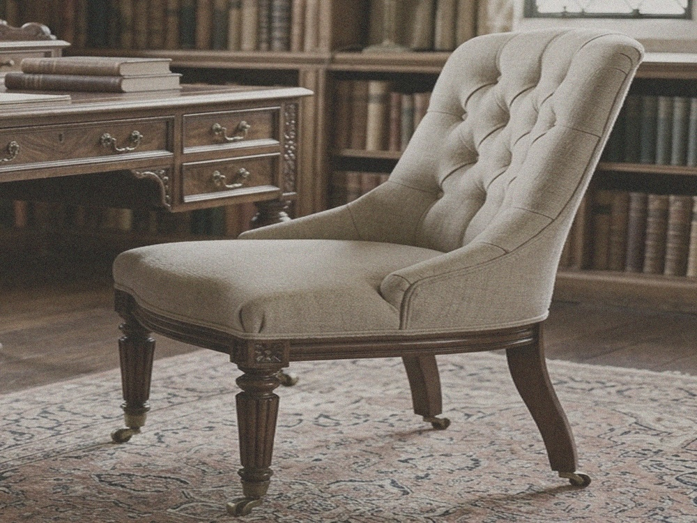
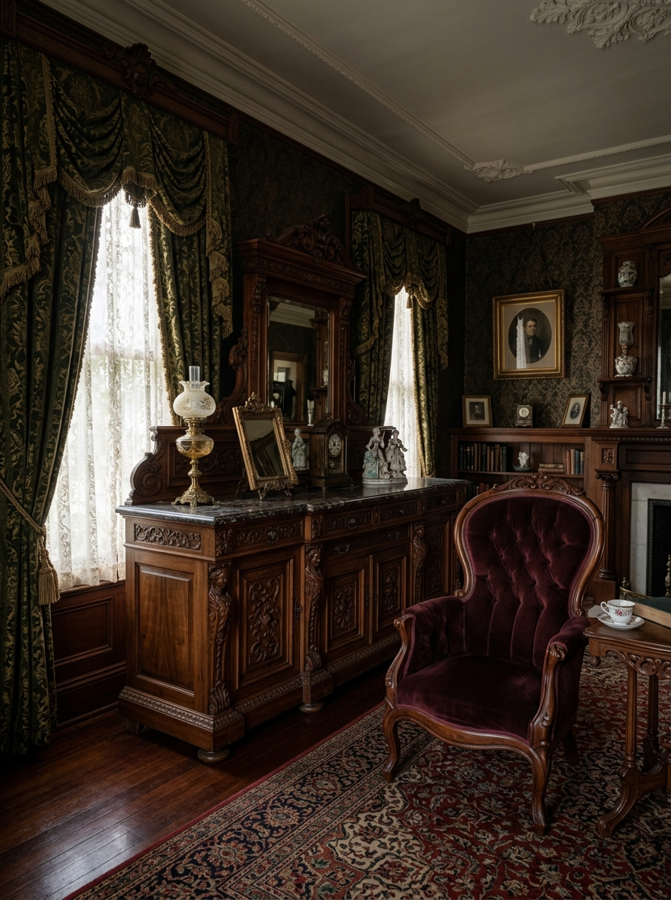
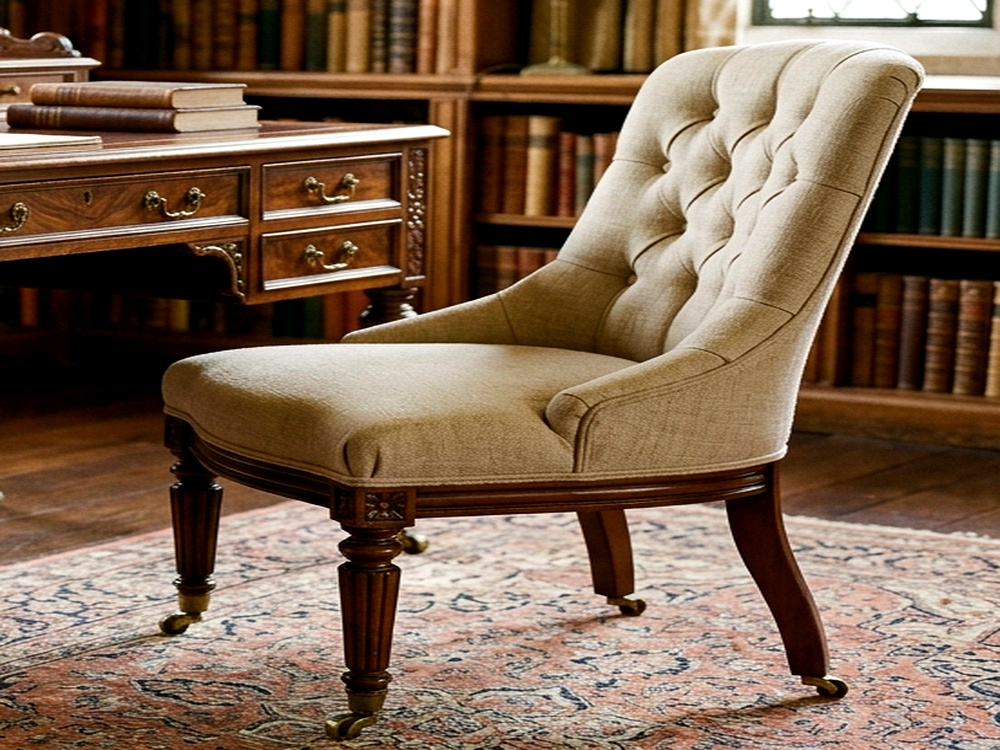
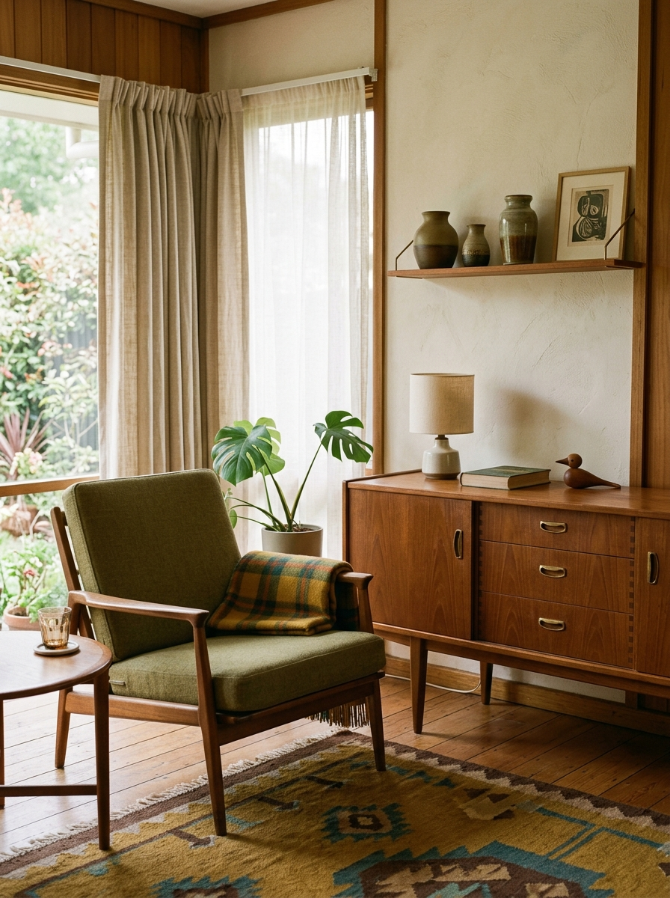

Restoration Begins with Listening.
Before anything is repaired, a piece is examined. Its materials, construction, previous interventions, wear and structural condition are carefully understood before deciding what should — and should not — change.
Every Mark Tells Us Something.
A seasoned conservator reads an antique like an archival manuscript. Every score mark, softened angle, and seasonal expansion line reveals how the piece was made and how it lived.

Structure
Assessing load-bearing members, tenon mortise joints, rail stability, and level plumb alignment across original timber axes.
Surface
Evaluating historical wax, original shellac films, and authentic oxidation without disturbing honest micro-wear patterns.
Joinery
Inspecting hand-cut dovetails, dowel pegs, seasonal shrinkage gaps, and natural wood movement across grain directions.
Finish
Micro-testing finish solubility to ensure any revitalizing treatment remains strictly non-invasive and reversible.
Upholstery
Documenting traditional jute webbing, hand-lashed coil springs, curled horsehair padding, and organic linen underlays.
Previous Repairs
Mapping non-original nails, inappropriate synthetic adhesives, or past modifications requiring sympathetic correction.
The Goal Is Not to Erase Time.
A successful restoration respects what has survived. Original materials, honest wear, construction methods and visible signs of age should be preserved whenever their condition allows.


Repair Should Support the Original Idea.
When joints weaken or supports fracture, our intervention is structural rather than cosmetic. We reinforce integrity from within, using historical techniques that honor the mastermaker's original engineering.
Understand
Diagnose timber movement, grain stress, and load vectors to identify exactly why a joint yielded over two centuries.
Stabilise
Disassemble compromised joints gently, clean old desiccated glues, and re-bond using reversible organic hide adhesives.
Respect
Incorporate sympathetic timber grafts matching exact wood species and age orientation, ensuring seamless strength without modern distortions.
Wood, Fabric and Finish Each Have Their Own Language.
Conservation decisions must adapt to the physical realities of each constituent element. We never apply a single generic recipe across diverse organic materials.

Wood
Historic European walnut, quarter-sawn oak, and mahogany require gradual climate acclimation, gentle humidity balancing, and nourishing with pure unrefined beeswax to prevent brittleness without clogging grain pores.
Textile
Upholstered pieces receive conservation using traditional foundation methods: heavy jute webbing tacked with blued cut tacks, hand-lashed coil springs, eight-way twine lashing, and natural unbleached flax scrim underlays.
Finish
We practice traditional French polishing using dewaxed button lac applied with a wool-and-linen rubbing pad (*fad*), building an incomparable soft depth of sheen that lets the wood's inner character glow naturally.
Repair the Piece. Do Not Rewrite Its History.
The hardest discipline in restoration is knowing when to stop. Restraint protects the authentic identity of the antique from over-enthusiastic intervention.
- Respect original maker proportions & silhouettes
- Preserve authentic patina, softened bevels & gentle wear
- Match joinery techniques to the piece’s specific era
- Ensure all structural repairs are sympathetic & reversible
- Aggressive chemical stripping or harsh sandblasting
- Artificial antiquing, fake distressing, or faux aging
- Replacing sound historic timber with modern composites
- Modernising geometry for temporary decor trends

Restoration Gives the Piece Another Chapter.
The work is complete when the furniture can return to a meaningful place — structurally sound, visually honest and ready to be lived with again for another century.
Explore our current gallery of conserved historical pieces or learn more about the ethos that guides our curatorial selections.
